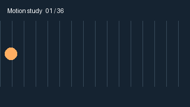

Motion over sockets
I stream the same short animation through TCP and UDP, then check which frames arrive intact. One missing fragment can change what the viewer sees.

I study what happens between sending a message and seeing a result. My projects follow video frames across sockets, words across workers and samples through a classifier.
I stream the same short animation through TCP and UDP, then check which frames arrive intact. One missing fragment can change what the viewer sees.

I follow a word from its first map output to its final count and compare how Hadoop and Spark move intermediate results.
I use chemical measurements to predict the cultivar of a wine and check the errors separately for each class.
Keep the input fixed. Record the output. Check a simple baseline before interpreting a performance difference.